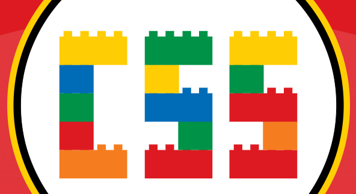
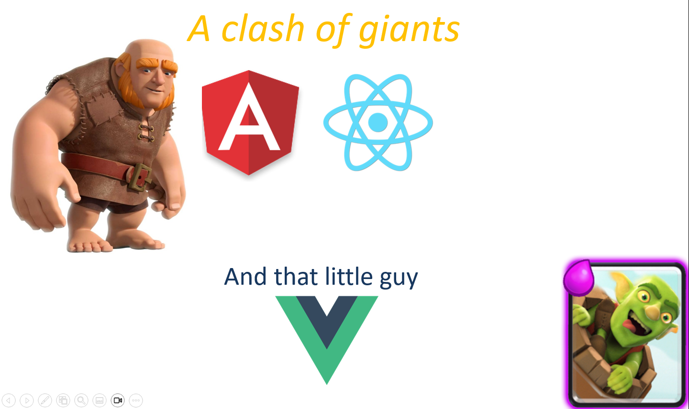
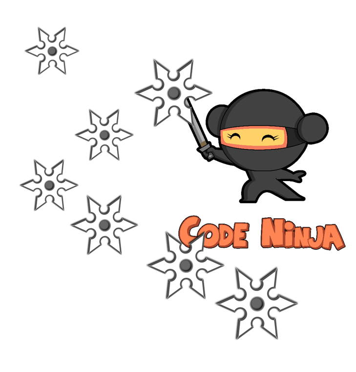

פרונטאנד - בקאנד ומה שביניהם

בעברי הובלתי את קורס התכנות של ממר"ם מספר שנים והכשרתי מאז אלפי
מתכנתים.
הרבה אנשים שואלים אותי איך כדאי להכנס לעולם הפיתוח וההייטק, ואני עונה שהכי כדאי ללמוד את המקצוע
המבוקש
ביותר בתעשיה כיום - Full Stack Developer...
למאמר המלא
האם תואר במדעי המחשב נדרש כדי להשתלב כמתכנתים בהייטק

בעבר, תואר במדעי המחשב היה תנאי די הכרחי על מנת להשתלב כמתכנת (למעט יוצאי ממר"ם שנחטפו לעבודה כך או
כך) אך המציאות השתנתה וכיום במיטב החברות, התואר הפך להיות מרכיב זניח ביחס לאלמנטים אחרים כגון...
למאמר המלא
יש ChatGPT - עדיין כדאי ללמוד תכנות ב-2023?

למידת מכונה (Machine Learning - לעיתים מכונה גם למידה חישובית) היא תחום במדעי המחשב העוסק בפיתוח
אלגוריתמים המיועדים לאפשר למחשב ללמוד מתוך דוגמאות, ולבצע משימות חישוביות בהן התכנות הקלאסי אינו
אפשרי...
למאמר המלא
שובו של הלקוח העשיר

עולם הפיתוח עובר בשנים האחרונות שינויים רדיקליים, ומפתחים מכל הצבעים והמינים מחפשים את דרכם לטכנולוגיות האינטרנט המודרניות. צד הלקוח (Frontend) חוזר להיות Rich Client עם הרבה לוגיקה וניהול State. שינויים קורים מהר בתקופתנו...
למאמר המלא
כוחות העל של CSS

יש עלייה מדהימה בשימוש בטכנולוגיות אינטרנט, ומפתחי פרונטאנד טובים הם אחד התפקידים הקשים ביותר לגיוס, CSS היא סיבה משמעותית לכך...
למאמר המלא
ריאקט, VUE או אנגולר במה להתמקד ב2023?

עולם פיתוח הפרונטאנד עבר בשני העשורים האחרונים מהפך דרמטי כשהדפדפן וטכנולוגיות האינטרנט הפכו להיות חזקות יותר ויותר ומאפשרות כיום לראשונה בהיסטוריה לפתח פתרון אחד שיעבוד על כלל הפלטפורמות – משעונים ועד טלויזיות חכמות, מחשבים מסוגים שונים וטלפונים ניידים.
למאמר המלא
איך מראיינים היום למשרת פיתוח בהייטק
במסגרת עבודתי כCTO של מיסטרביט אני מייעץ לחברות ולסטארטאפים בנושאים של פיתוח תכנה, ארכיטקטורה, ראיונות עבודה ועוד. פוגש גופי פיתוח רבים ותמיד סקרן ללמוד מהם על תובנות ואסטרטגיות פיתוח ששירתו אותם. אנו גם שולחים מתכנתים רבים לראיונות עבודה כך שאנו מתעדכנים תדיר לגבי הדרישות המשתנות בראיון עבודה.
למאמר המלא
שבעת הכלים של המתכנת

כמתכנת ותיק יצא לי לאורך השנים לתכנת בשפות תכנות רבות ומגוונות, נוכחתי לדעת שבכל השפות יש בסך הכל שבעה כלי יסוד.
למאמר המלא